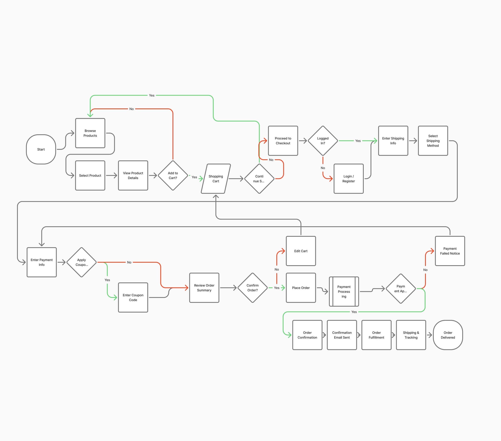
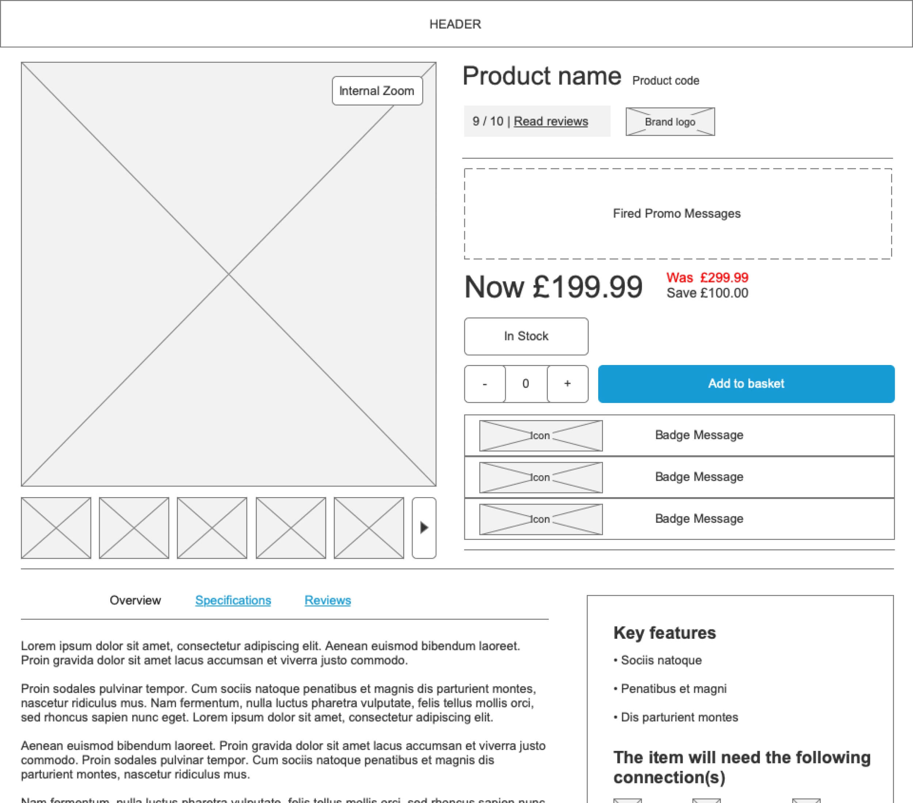

Six agent systems into one platform
I led the end-to-end design of a B2B agent portal and a new B2C store for Euronics UK, working with a Business Analyst and four engineers. For agents, it replaced six disconnected purchasing systems with one platform
Sole Designer (me), 4 Engineers, Business Analyst
Sketch, Axure
3 Months (design phase)

6 to 1
purchasing systems for agents
The Problem
Euronics UK agents are independent retailers placing complex orders with strict supply rules. They had to work across six disconnected systems, and invoices, credit control and claims all went through support. That made ordering slow for the agents and left the business with a heavy support load.


Research & Insights
I led the design from discovery to launch, working with the Business Analyst and four engineers.
- Discover: Stakeholder workshops, an audit of all six systems, an analytics review and a competitor review. The most common agent pain point was managing accounts and tracking processes across multiple platforms.
- Define: Personas for agents and customers, and requirements set with the Business Analyst.
Ideation & Strategy
The aim was an MVP: give agents one fast, reliable place to order and manage their accounts, and give shoppers a modern store under one consistent brand.

Order user flow

Wireframe
Key Decisions
- One gateway instead of six entry points. Agents were moving between six systems to complete everyday tasks. I designed a single gateway to the B2B section that brings together what those systems did separately, so agents start in one place. Two modes, My Company and Ordering, separate managing the account from placing orders, and a persistent sidebar splits personal settings (My Account) from company administration (My Company). I considered keeping separate sections under a shared login and brand. It would have been cheaper to build, but agents would still have switched contexts, so it wouldn’t have solved the core problem.
- Dense, scannable tables for order management. Agents handle orders in volume, so I designed overview pages as dense tables with sorting, search and pagination. A card-based layout would have looked friendlier, but it’s slower to scan at volume. For the MVP I kept the tables clear and functional rather than decorative, so agents could find what they needed and act quickly.
- Self-service in place of support. Agents previously relied on support for account tasks. I designed self-service for account details, order information, teams and permissions, budgets, invoices and credits, and claims. A view-only version, with changes still going through support, would have been quicker to build, but it would have kept the support burden the business wanted to reduce. The invoices and credits page shows an agent’s credit position at a glance (total limit, open invoices, orders not yet invoiced, remaining credit), lets them search documents, and puts a Claim button on the invoice itself, so they can go from an invoice to a claim without contacting anyone.

B2B orders

B2B period planning orders
- A permissions model agents manage themselves. Larger agents need to control who can spend what. I designed permissions as rules set per unit, such as an allowed order threshold per order, active over a time period and switchable on or off. These sit alongside users, user groups, units, cost centres and budgets, so agents can mirror how their own business is structured. Fixed roles such as admin, buyer and viewer would have been simpler to build, but too rigid for agents with several teams.

Users and permissions

Order Reports
- Designing within SAP Commerce Cloud’s limits. SAP Commerce Cloud placed limits on the design, such as which areas could use dynamic text. The engineers flagged these early, and I designed around them rather than reconciling later. Designing freely and fixing it after would have produced nicer screens on paper, but rework in the build.
- B2B first. I started with the B2B section because it was the harder problem and carried the most business value, which reduced risk early. The trade-off was that the engineers had less to start building from while I worked through it.
- MVP: function before polish. The aim was an MVP that gave agents one reliable place to work. I reused components and kept tables simple rather than fully designing every page. A polished interface for a smaller scope, such as ordering only, would have looked stronger but solved fewer of the agents’ problems at launch.
Testing
I tested a prototype of the B2B order flow with 12 participants in one round. They completed the prototype tasks successfully, and no changes were needed.
The Consumer Side
I applied the Euronics brand guidelines across both experiences and decided how to use them on each. I fully modernised the B2C layouts so products are easier to search, filter and compare, and rebuilt them as responsive templates to fix the slow, non-responsive mobile experience behind high cart abandonment. Components were shared between B2C and B2B to keep the system consistent and the build efficient.
I also split checkout into five smaller steps to remove friction in the original flow, and tested the B2C order flow with 12 participants.
- Edge case: Signed-out customers see a sign-up form on the order confirmation page, with the message “Create an account for a fast checkout and easy access to previous orders”.

We asked guests to sign up after placing an order

Already a member
Design & Handoff
- Design: I mapped user flows, then built wireframes and responsive templates for desktop, tablet and mobile, supported by a design system in Sketch.
- Build and launch: I handed over to the four engineers with documentation, reviewed the build through design QA and supported the release. The platform launched in September 2018.
Outcome
- Purchasing for agents consolidated from six systems to one.
- Backend integration enabled automated order processing and room to scale.
- Agents can manage their own invoices, credit and claims, reducing manual support work.
- Customer support reported overwhelmingly positive feedback after rollout.
What I Learnt
Aiming for an MVP meant putting function before polish. Simple tables and reused components got agents working in one place sooner, and I would take the same approach again.
If I were continuing the work, I would measure how long agents take to place a repeat order and how many account-related support requests remain, because those would show whether self-service is doing its job.